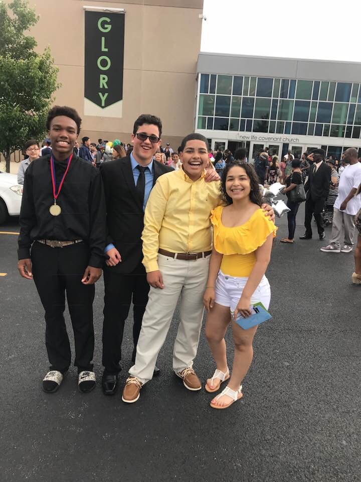
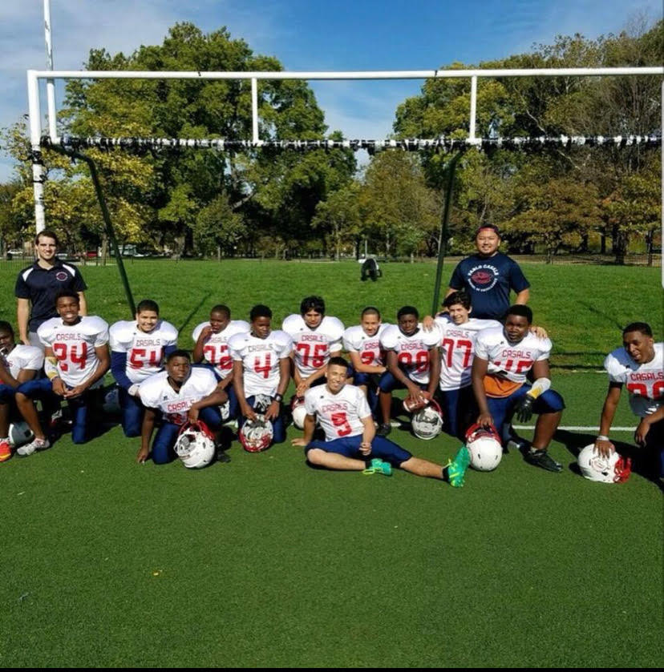

1 / 3
My favorite team in the Nfl is the Dallas Cowboys because of their quaterback and running back.
2 / 3

This is me after my 8th grade graduation with my sister and two friends in Chicago,IL where I have lived since birth.
3 / 3

This is my football team which I played with for 3 years after our last game.
❮
❯